Version 0.6.0, Juni 2017
Oxygen UpdateFlat Toolbar

As asked for by some users and following the flat widget look and feel through, the background gradient on the main toolbar has been replaced by a fitting shade of grey.
Java Editor Font Size on Mac
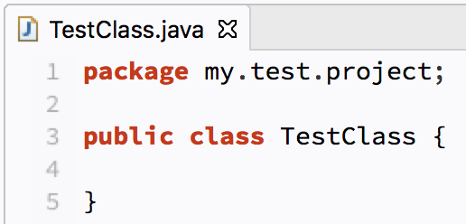
The default java editor font-size on Mac OS has been increased due to remarks that it was a bit to small with previous versions.
Bug Fixes
Thanks to the participation of dedicated users, we were able to spot and resolve some nuisances. Please refer to the issue #79 for more details.
Version 0.5.0, April 2017
Service UpdateBug Fixes
Version 0.4.0, June 2016
Neon Light ;-)FlatScrollBar Overlay for ScrolledComposite
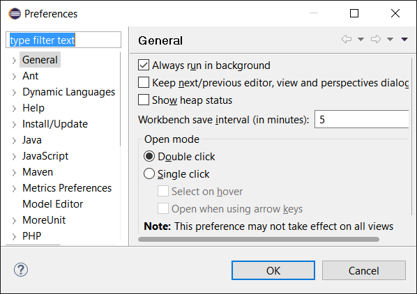
Styling capabilities have been enhanced to allow adoption of ScrolledComposite widgets and
derivatives by the FlatScrollBar
overlay mechanism on Windows platforms. The picture shows how the content area of
the preference dialog blend in the Clean Sheet scrollbars on diminution.
Forms Style Adjustments
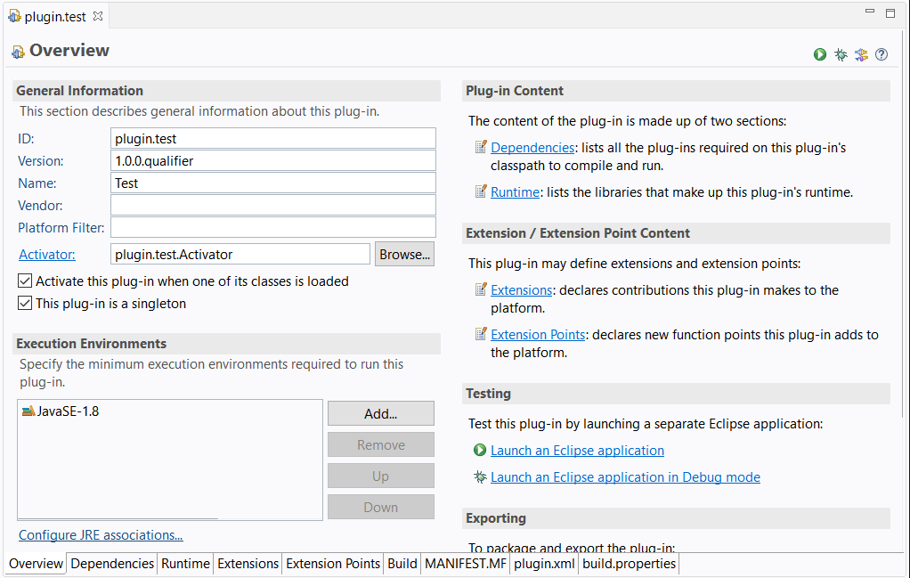
The styling of FormToolkit
based views and editors has been overhauled. Together with the
FlatScrollBar
overlay mechanism on ScrolledForms (Windows only), UI parts like the PDE Manifest editor
integrate now quite nicely with the overall look and feel of the Clean Sheet theme.
Bug Fixes
Many thanks to the users that support development by reporting issues and verifying the corresponding fixes. This way it was possible to tackle the following list of problems: #63, #64, #66, #68, #69. If any of the fixes and workarounds for these problems might not work for you, please feel free to reopen the issue tracker entries and contribute your new insights for reproduction.
Version 0.3.0, March 2016
Herald of SpringOS X Support
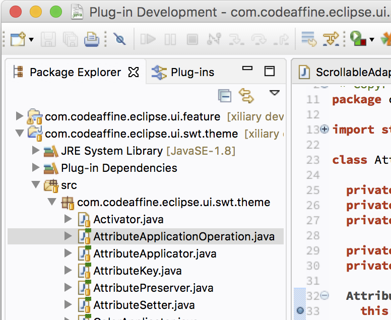
Probably the most remarkable supplement that comes with the latest version is the Mac OS X support of
Clean Sheet. Approached upon the subject on various occasions it appeared worthwhile to provide a theme
version that adopts the ergonomic look & feel concept as well as the Source Code Pro font incorporation
from its Windows relative. As OS X comes with decent enough scrollbars out-of-the-box the
FlatScrollBar overlay mechanism used for Windows 10 has been dropped.
Kudos to Holger Staudacher.
FlatScrollBar Overlay for StyledText
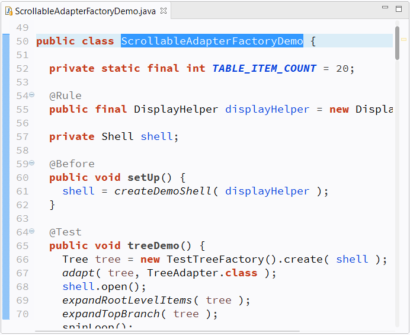
Styling capabilities have been enhanced to allow adoption of StyledText widgets by the
FlatScrollBar
overlay mechanism on Windows platforms. With this in place, SourceViewer based UI parts like
code editors or console content now fit nicely in the overall look and feel of the Clean Sheet theme. As the
StyledText widget is a pretty complex component by itself there still might be some uncovered spots.
As usual, corresponding problem reports to our issue tracker
are highly appreciated.
Note that the screenshot was taken with 125% textsize and cleartype activated.
Font and Color Scheme Adjustments of the Debug Console
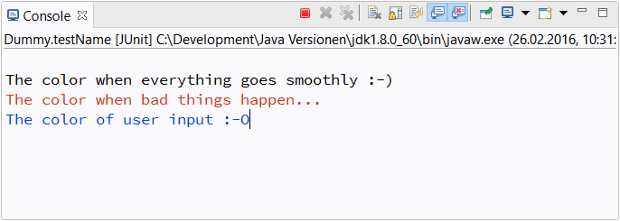
The debug console now dovetails with the general Clean Sheet color scheme with respect to the background and text colors. Additionally, the console's font family has been changed to Source Code Pro for a more consistent reading experience.
Note that the screenshot was taken with 125% textsize and cleartype activated.
P2 Composite Repository
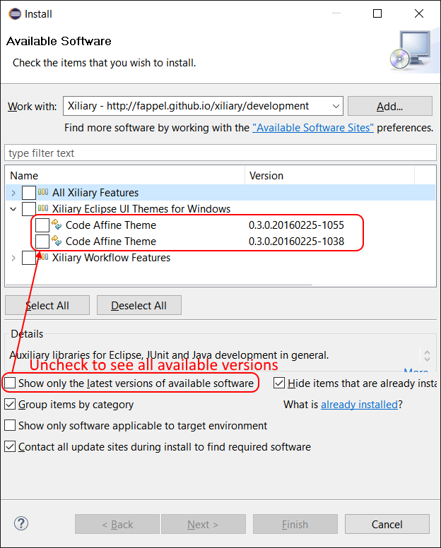
The Xiliary P2 repository deployment mechanism has been overhauled to produce a composite repository. This means older releases aren't erased anymore. In (the very, very unlikely...) case that a new Clean Sheet version has one or more critical issues it's no problem to file a bug, downgrade to the previous version, and wait serenely for the fix version to come.
Kudos to Lorenzo Bettini.
Bug Fixes
Many thanks to the users that support development by reporting issues and verifying the corresponding fixes. This way it was possible to tackle the following list of problems: #60, #59, #58, #57, #55 If any of the fixes and workarounds for these problems might not work for you, please feel free to reopen the issue tracker entries and contribute your new insights for reproduction.
Version 0.2.0, December 2015
Christmas SpecialSource Code Pro Incorporation
Monospaced font family for user interface and coding environments
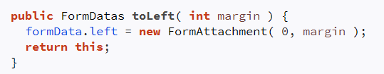
It seems to be the current consensus that the fewer details a font needs to convey a character clearly, the more legible it will appear on a broader range of screens. Hence, sans-serif fonts are often considered superior when it comes down to on-screen-readability of texts. Clean Sheet now incorporates one of the most popular sans-serif open source fonts for coders as preset. This affects the preferences for Text Editor Block Selection, Text Font, and Java Editor Text Font (Window -> Preferences -> Colors and Fonts).
Note that the screenshot was taken with 125% textsize and cleartype activated.
Enhanced Styling Capabilities
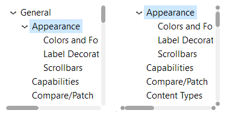
The implementation of the enhancement requests #46 and #52, regarding the incorporation of the flat scrollbar capabilities into custom Eclipse themes, enable the style variants shown by the picture above.
The fixed width demeanor is achieved by the following css attribute setting
for supported Scrollable types (the default value is 'expand-on-mouse-over'):
adapter-demeanor: fixed-width;
The increment/decrement button length can be set as shown by the subsequent snippet
(the default value is '0'):
flat-scroll-bar-increment-length: 7;
Flat Scrollbar Customizations
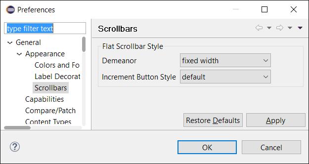
The aforementioned enhancement of the styling capabilities suggested to allow Clean Sheet users the customization of these possibilities by preference settings. The presets (default) use the settings defined by the currently activated style sheet. Other selections will override the css values.
Using the fixed-width demeanor setting might be considered more appropriate, for example, when using the feature only as extension to the Dark theme (see below).
The corresponding preference page is located at Windows -> Preferences -> Appearance -> Scrollbars.
Scrollbar Preferences Quick Access
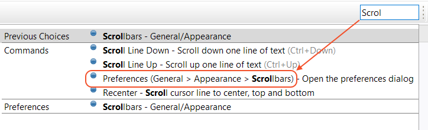
For convenience, the scrollbar preference page can be opened using quick access with the key words scrollbars and appearance.
Dark Theme Contribution
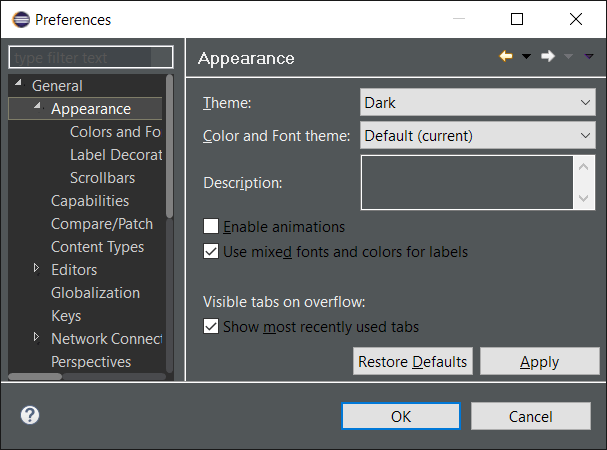
Instead of supplying an extension of the Dark design, now the feature contributes the flat scrollable capabilities to the original theme. This is less error prone and reduces the maintenance effort to a minimum. The screenshot shows an incorporation with fixed-size demeanor settings. The extra theme definition provided by previous versions has been discontinued and the flat scrollbar functionality gets added statically.
General Refinements
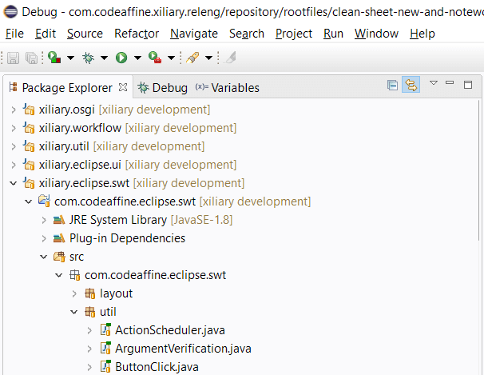
The current version supplies some color fine tunings that increase the contrast between part content and stack tabs a bit for better perception. Furthermore, it aligns the shades of grey of the inactive part tabs, for example, to blend in even better with windows dialogs and menu colors.